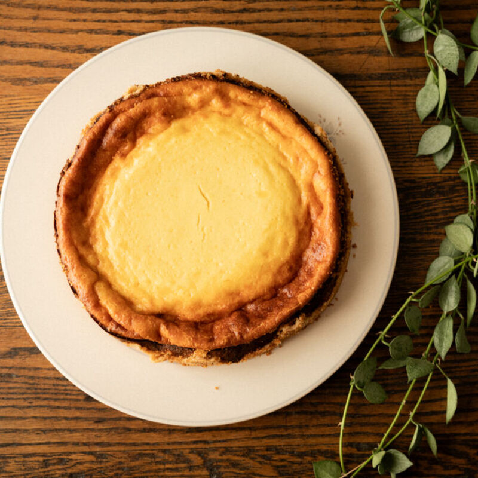
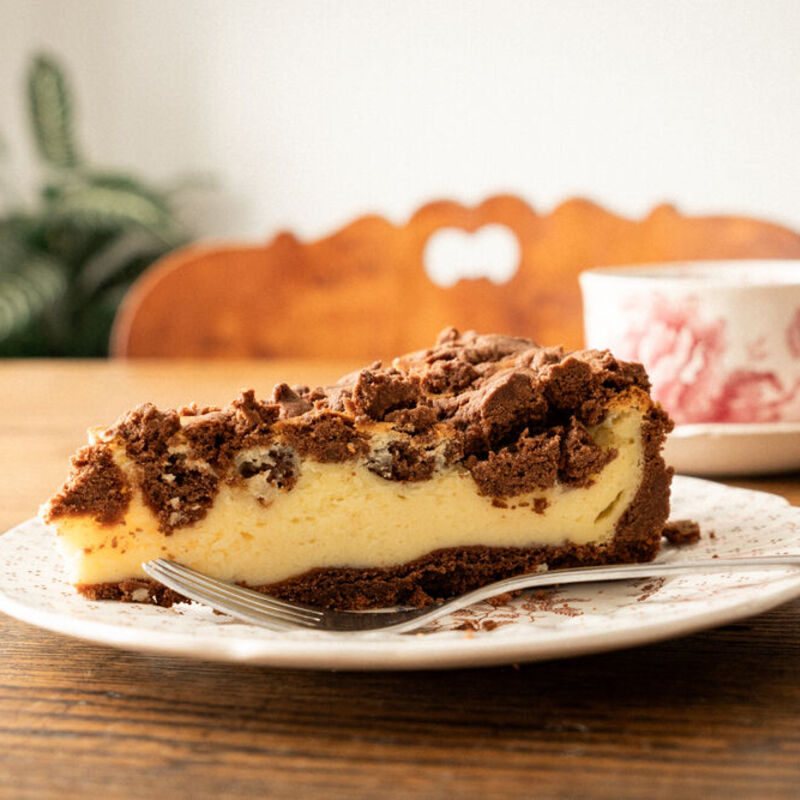
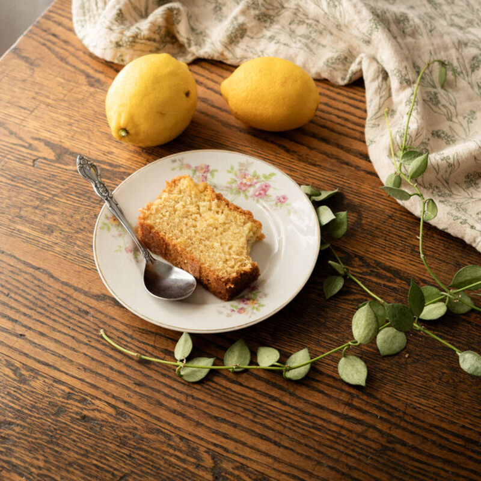
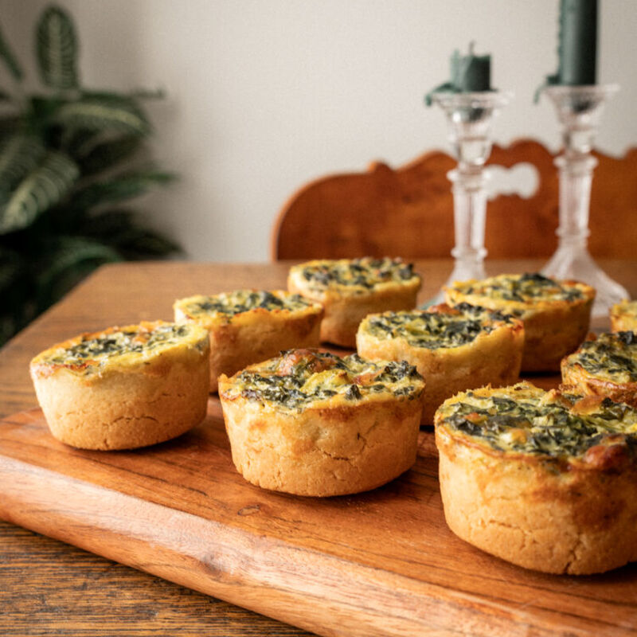
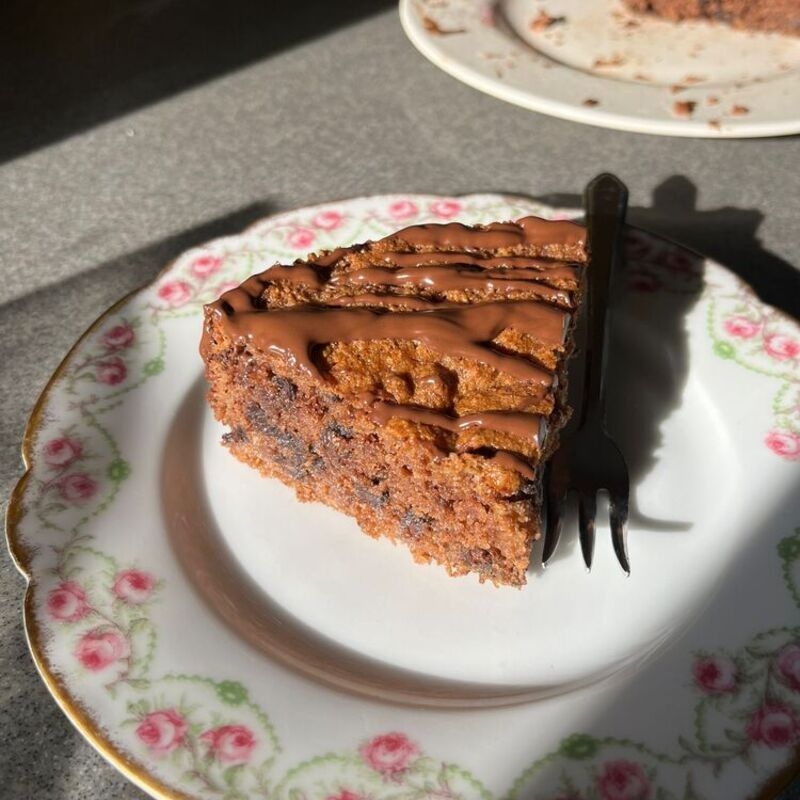
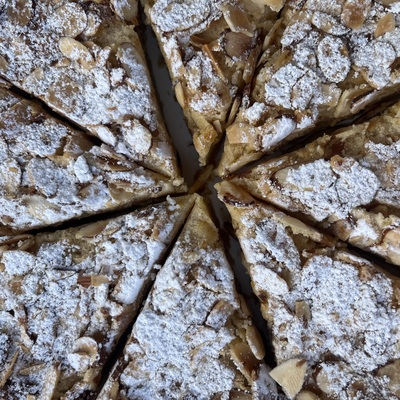
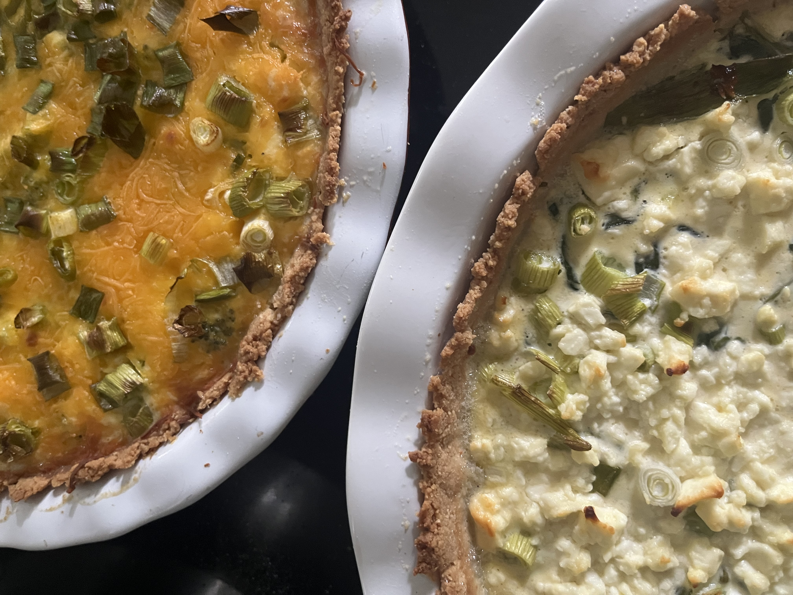
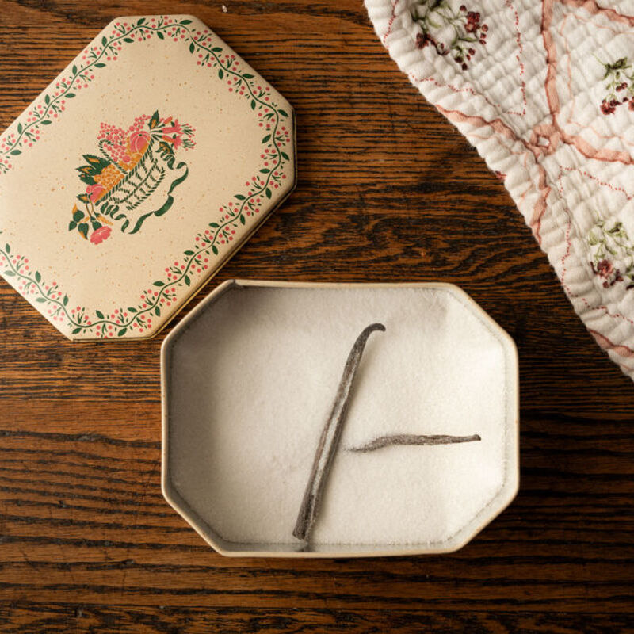

German Cheesecake
Käsekuchen
The classic German cheesecake
Authentic German Baking in Asheville
Born in Cologne, Germany, I grew up with the rhythm of Kaffee und Kuchen—afternoon coffee and cake, seasonal treats, and traditions handed down from my Omas. Now settled in Asheville, North Carolina, I'm sharing those same flavors with the Blue Ridge Mountains. Whether you discover us at a local farmers market, order something special for a gathering, or simply want a taste of authentic Germany, you're warmly welcome here.
As someone who is gluten-free myself, I know how much it means to find a treat that truly doesn't compromise on taste or tradition. That's why I offer gluten-free, dairy-free, and vegan options across many of our German classics. Every item is made with care, using traditional techniques and locally-sourced ingredients whenever possible.

Käsekuchen
The classic German cheesecake

Russischer Zupfkuchen
Delicious German cheesecake with pulls of chocolate swirls

Zitronenkuchen
Grandma Elbach's lemon cake

Spinattörtchen
Spinach-packed tartlets with a flaky crust

Gewürzkuchen
A holiday chocolate cake right from Grandma's kitchen

Saftiger Mandel Ricotta Kuchen
Moist almond and ricotta cake with orange zest — naturally gluten-free

Saisonale Gemüse-Quiche
Gluten-free savory quiche with seasonal vegetables and almond crust
Classic apple pastry
A delicious vegan banana cake with chocolate chips
Classic German Bee Sting Cake with honey almond topping and vanilla cream filling
Streusel cake with blackberries and sour cream filling
The classic German cheesecake topped with blueberries
Grandma Elbach's lemon cake with blueberries folded into the batter
Gluten-free savory quiche with broccoli, cheddar, and almond crust
Fluffy yeast cake topped with crunchy layer of almonds, butter, & sugar
Spiced German carrot cake with walnuts
Spiced German carrot with cheesecake filling and nut butter swirl
Cake made to be served with coffee
The German culture icon known for wavy chocolate and sour cherry taste
Traditional German crown cake with buttercream, raspberry jam, and caramelized nuts
No-bake energy balls with raw honey, almond butter, oats, seeds, and vegan chocolate chips
A 450-year-old recipe from Mary's grandmother's 60-year-old cookbook. Rich German butter cake with rum-soaked raisins, walnuts, and a lemon glaze — fit for a king.
Savory spin on the classic strudel pastry
This recipe creates multi-layered bars featuring a protein-rich base, a sweet and salty caramel layer, and a rich dark chocolate coating.
Grandma Elbach's lemon cake topped with dairy-free buttercream and edible flowers
Vegan marble loaf cake with chocolate and vanilla swirl, topped with chocolate buttercream
Gluten-free oat cookies with vegan chocolate chips and rum aroma
The classic German cheesecake topped with fresh peaches
A light and fluffy gluten-free vanilla cake topped with fresh peaches and a sweet peach jam glaze
Streusel cake with peaches and sour cream filling
A rich German cheesecake layered with earthy poppy seeds and topped with buttery streusel crumbles
A moist pumpkin cake with a crumbly almond streusel topping and vanilla icing — gluten-free.
The classic German cheesecake topped with fresh raspberries
A light and fluffy gluten-free vanilla cake topped with fresh raspberries and a sweet raspberry jam glaze
Buttery gluten-free shortbread cookies with a PB&J topping
Gluten-free savory quiche with spinach, feta, and almond crust
A light and fluffy gluten-free vanilla cake topped with fresh strawberries and a sweet strawberry jam glaze
Gluten-free savory quiche with yellow zucchini and almond crust
Puddingpulver
Traditional German pudding mix for creating rich, creamy desserts at home. Simply combine with milk and sugar for an authentic German pudding experience.

Vanillezucker
Fragrant vanilla-infused sugar, a staple in German baking. Perfect for adding authentic flavor to cakes, cookies, and whipped cream.
Some of our cakes are gluten-free and some are not. That is a choice. We will not compromise what makes a German cake good just to put a label on it.
A customer in Asheville asked for a chocolate birthday cake. I knew the one. But it got me thinking about how German birthdays are different here, starting with the fact that you are expected to bring your own cake.
Kaffee und Kuchen is the German afternoon tradition of coffee and cake — a daily ritual at 3pm that most Americans have never heard of. It's why our bakery is named 3pm, and it shaped the lighter, less-sweet style of German baking.
Black Mountain Tailgate Market
Every other Saturday, May 2 – November 28 · 9am–12pm
First Baptist Church, Black Mountain, NC
Main season — every other Saturday
West Asheville Tailgate Market
Tuesdays, April 7 – December 22 · 3:30pm–6:30pm
718 Haywood Rd., Asheville, NC 28806
| S | M | T | W | T | F | S |
|---|---|---|---|---|---|---|
| 1 | ||||||
| 2 | 3 | 4 West Asheville Tailgate Market | 5 | 6 | 7 | 8 Black Mountain Tailgate Market |
| 9 | 10 | 11 West Asheville Tailgate Market | 12 | 13 | 14 | 15 |
| 16 | 17 | 18 West Asheville Tailgate Market | 19 | 20 | 21 | 22 Black Mountain Tailgate Market |
| 23 | 24 | 25 West Asheville Tailgate Market | 26 | 27 | 28 | 29 |
| 30 | 31 |
| S | M | T | W | T | F | S |
|---|---|---|---|---|---|---|
| 1 West Asheville Tailgate Market | 2 | 3 | 4 | 5 Black Mountain Tailgate Market | ||
| 6 | 7 | 8 West Asheville Tailgate Market | 9 | 10 | 11 | 12 |
| 13 | 14 | 15 West Asheville Tailgate Market | 16 | 17 | 18 | 19 Black Mountain Tailgate Market |
| 20 | 21 | 22 West Asheville Tailgate Market | 23 | 24 | 25 | 26 |
| 27 | 28 | 29 West Asheville Tailgate Market | 30 |
Schedule may change — follow us on Instagram and Facebook for the latest updates.
Be the first to know about new products, market schedule updates, and stories from the kitchen. No spam — just monthly updates.
Interested in featuring authentic German baked goods at your café, restaurant, or market? We partner with local businesses throughout the Asheville area to provide fresh, traditional German baked goods made with the same care you'd find at our market table.
We specialize in partnering with coffee shops, specialty markets, and restaurants throughout the Asheville area. Our authentic German baked goods are perfect for cafés looking to offer unique pastries, markets seeking artisan products, and restaurants wanting distinctive dessert options.
Reach out to discuss pricing and how we can work together—we'd love to hear from you.